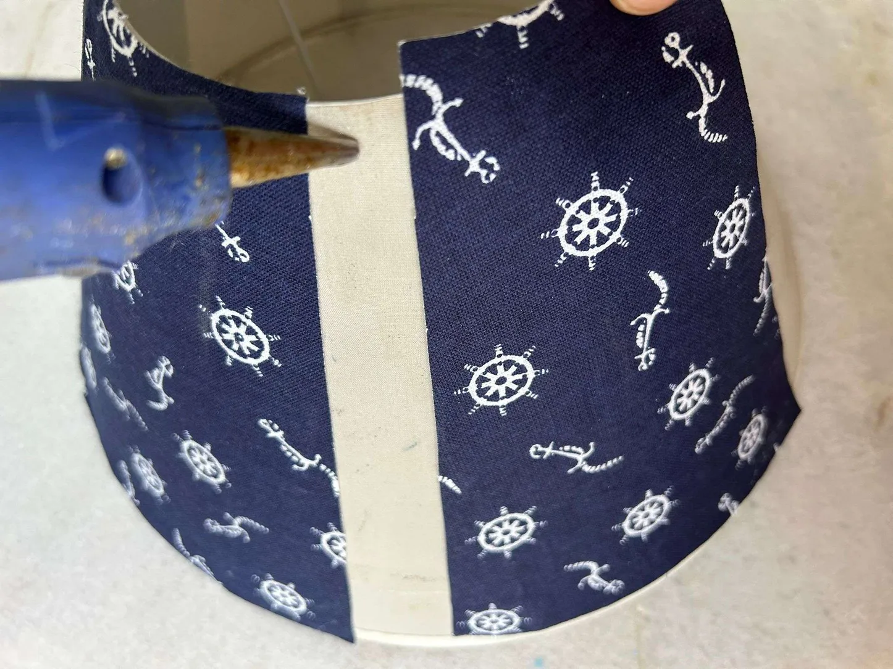

Description
There is something funny about lamps and lampshades; you only acknowledge it in the dark. But the fact is that for people with an eye for home décor, lamps and lampshades are equally important in daylight. Even when not switched on to light up the space, a beautiful lampshade can spruce up the décor effortlessly and will be noted even by amateurs in home décor. After all, attractive home décor and décor pieces attract attention.
Look around, and if you have an old lampshade or a lampshade that is out of style or bored, take it out and amp it up with a pleated lampshade, giving it a much-needed lampshade makeover. If your lampshade is of light shade, you can opt for a navy pleated lampshade to splash a dark shade in your home décor through the decorative lighting. You can go for DIY home improvement in many ways, but trust me, nothing will be as simple as going for a handmade lampshade you make by crafting your own lampshade.
Now, if you are wondering how to make a pleated lampshade at home, I am here with a simple DIY pleated lampshade tutorial. All you need for this tutorial on how to make a pleated fabric lampshade are a lampshade, paper, fabric (you can take an old scarf or leftover fabric from your other projects), paper, glue, pen, and scissors. This DIY pleated fabric lampshade will become a center of attraction for your home décor even when not lit.
Materials
Lampshade
Paper
Fabric
Glue
Pen/pencil
Scissors
Step 1: DIY pleated lampshade: Draw the lampshade on the paper
Take a piece of paper and place it on the lampshade. Draw the lampshade shape on the paper with a pen/pencil. This step will help non-specialists make a beautiful homemade lampshade without spoiling the fabric.
Bonus Tip: If you know how to work with fabric directly, you can skip the step of drawing the lampshade on a piece of paper and do it on the fabric to craft your own lampshade of fabric.
Step 2: Place the paper on the fabric and trace the shape of the lampshade
Place the paper with the lampshade drawn on the fabric you have chosen for your pleated lampshade. I am making a navy pleated lampshade and have taken a navy-coloured fabric. Now, with a pen or pencil, trace the shape of the lampshade on the reverse side of the fabric.
Bonus Tip: To make decorative lighting, you may try mixing and matching the fabric when making your homemade lampshade. You are free to show your creativity when making a pleated lampshade.
Step 3: Cut the fabric
Cut the fabric into the shape of the lampshade. You will have to make a few pieces to cover the entire surface of the lampshade.
Bonus Tip: You will need a few pieces of fabric to cover the surface. Also, ensure that the length of the fabric should be at least an inch more on the top and bottom, which will be folded and glued over the top and bottom part of the lampshade.
Step 4: Glue the cut fabric on the lampshade
Use fabric glue to glue the fabric pieces over the lampshade. Please remember to glue the reverse side of the fabric on the lampshade so the right side is visible on the DIY pleated lampshade.
Bonus Tip: Use stripes to cover the corners. Once you have covered the lampshade with fabric cut-outs, wrap the corners and remaining empty parts with stripes of the same fabric.
Step 5: Here’s the fabric-covered lampshade
Here’s the lampshade covered in fabric. Though you can use the lampshade as it is, why not try to add something to decorate it and make it more beautiful?
Step 6: Glue lace on the pleated lampshade

I have glued lace on the top and bottom of the lampshade to make it attractive. It also hides the edges and gives the DIY pleated lampshade a clean look.
Step 7: Navy pleated lampshade: It’s done!
Here’s the DIY pleated lampshade all done and decorated for your lamp.
Step 8: Place the lampshade on the lamp
Place the lampshade back on the lamp. Enjoy the elegant beauty of the lampshade you crafted for your DIY home improvement.